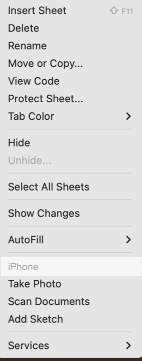
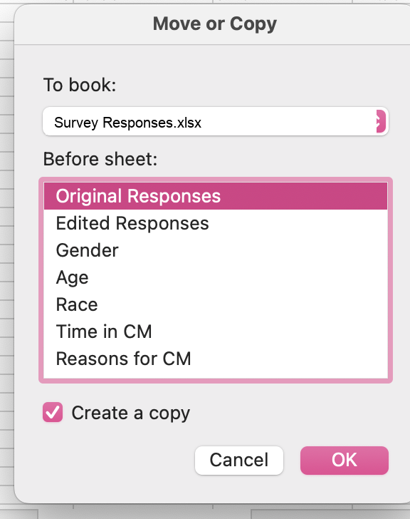

Codebook and Spreadsheet Guide
PST 315: Methods of Policy Analysis and Presentation
The examples below use sample data. Skills Win Coaching Organization is a real Syracuse University program, but the survey, variables, and responses shown here are invented for teaching purposes and are not actual SWCO results.
Creating your codebook
Step 1: In Word, create a table with four columns: Column, Field Name, Definition, and Code.
| Column | Field Name | Definition | Code |
|---|---|---|---|
The number of rows depends on the number of questions you have on your survey or how many research questions you have. As a general rule:
Number of questions + 2 = Number of rows in your codebook table
The +2 rows account for the header row and the respondent ID row.
Step 2: Create a list of variables from your questions. These will be your Field Name and Definition columns.
- Your field name should be a short word or a few letters describing the variable. (Example: grade level = GRADE, or engagement = ENGAGE.)
- Your definition should be the original question or a description of the variable. (Example: “What grade are you in?” or “Code is identical to the respondent’s ID number.”)
| Column | Field Name | Definition | Code |
|---|---|---|---|
| A | ID | Respondent’s unique identification number | Code is identical to identification number |
| B | SITE | Which site session did you attend? | |
| C | GRADE | What grade are you in? |
Note: each field name (variable) aligns with a column of your spreadsheet according to your codebook.
Step 3: Repeat step 2 for all of your questions.
| Column | Field Name | Definition | Code |
|---|---|---|---|
| A | ID | Respondent’s unique identification number | Code is identical to identification number |
| B | SITE | Which site session did you attend? | |
| C | GRADE | What grade are you in? | |
| D | COACH | The coaches were helpful. | |
| E | ENGAGE | The exercises were engaging. | |
| F | IMPROVE | What could be improved at your site sessions? |
Step 4: Assign a code to each possible answer for each question. Your variable type will make a difference here.
Note: for open-ended responses, you should create up to 5 or 6 categories to place the open-ended responses into. See the Qualitative Coding Guide.
Step 5: In your spreadsheet, you will use your codebook to code your raw data.
Codebook example
| Column | Field Name | Definition | Code |
|---|---|---|---|
| A | ID | Respondent’s unique identification number | Code is identical to identification number |
| B | SITE | Which site session did you attend? | 1 = Site A 2 = Site B 3 = Site C 99 = No response |
| C | GRADE | What grade are you in? | 1 = 9th 2 = 10th 3 = 11th 4 = 12th 99 = No response |
| D | COACH | The coaches were helpful. | 1 = Strongly disagree 2 = Disagree 3 = Neutral 4 = Agree 5 = Strongly agree 99 = No response |
| E | ENGAGE | The exercises were engaging. | 1 = Strongly disagree 2 = Disagree 3 = Neutral 4 = Agree 5 = Strongly agree 99 = No response |
| F | IMPROVE | What could be improved at your site sessions? | Open ended response: 1 = More activities 2 = More time 3 = Smaller groups 4 = Better materials 5 = Nothing 99 = No response |
Creating your spreadsheet
Step 6: Once you have created your codebook, it is time to code your data in Excel using the codes you just created above.
Why do we do this? By coding your data, it will make your data far easier to comprehend and to analyze.
Step 7: Open a new Excel spreadsheet. Begin by typing the field names for each of your variables from your codebook into the first row of the sheet.
| ID | SITE | GRADE | COACH | ENGAGE | IMPROVE |
|---|---|---|---|---|---|
Step 8: Save this Excel spreadsheet and turn it in along with your Codebook document and Revised Executive Summary for your assignment.
Once you have your data
Step 9: Copy your data into your spreadsheet and create a copy of your responses. You want to save an original version of your data along with the coded data. You can create a copy by right-clicking on the spreadsheet tab, selecting “Move or Copy,” and selecting to copy. This will create a new tab with the same data – name these tabs “Original Responses” and “Coded Responses” to ensure these don’t get mixed up.


Step 10: Once you have a copy of your responses to edit, you should start coding all of the responses based on your codebook. Coding will look different depending on your types of variables. Ask your UCA any questions about specific variables.
Coded data looks like this – every answer replaced by its code from the codebook:
| ID | SITE | GRADE | COACH | ENGAGE | IMPROVE |
|---|---|---|---|---|---|
| 1 | 1 | 3 | 5 | 4 | 1 |
| 2 | 2 | 4 | 4 | 5 | 2 |
| 3 | 1 | 2 | 3 | 3 | 1 |
| 4 | 3 | 4 | 5 | 2 | 3 |
| 5 | 2 | 3 | 4 | 5 | 5 |
| 6 | 1 | 1 | 2 | 3 | 2 |
| 7 | 3 | 2 | 5 | 4 | 99 |
Hint: use the Find and Replace feature in Excel to quickly code multiple-choice variables.